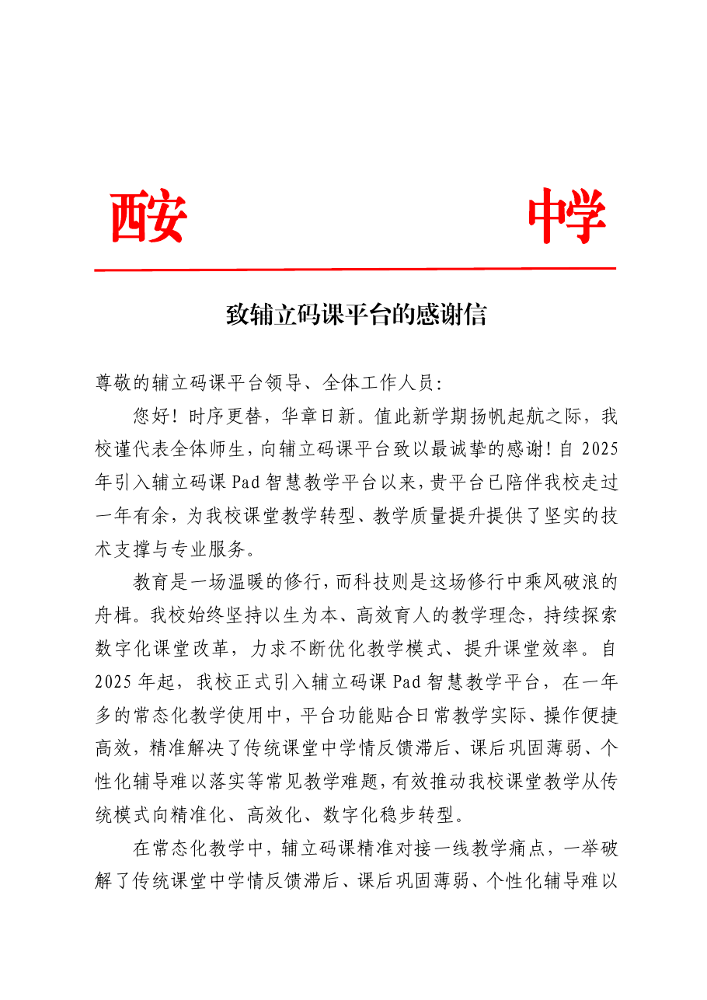
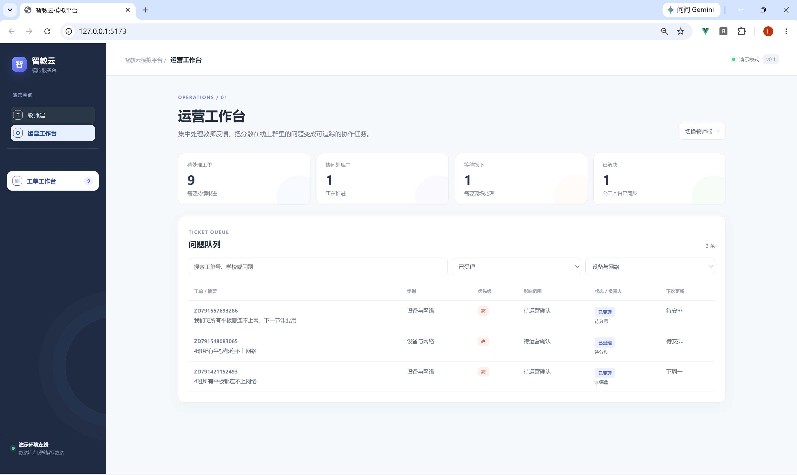

05 · 客户成功实践
真实一线交付经历
4
所学校
100+
名教师回访
培训与产品演示
面向教师和校方管理人员开展平台培训、功能演示与操作讲解。
现场支持与问题跟进
协助处理账号、设备、网络及平台使用问题，整理反馈并协调后续处理。
回访与效果汇报
回访教师使用情况，整理问题与建议；参与输出教学数据分析材料。
这段经历是实际工作；后续的 AI 服务台是基于一线场景另行制作的个人模拟 Demo，两者边界明确。回访原表、学校名称、教师 / 学生信息及内部培训课件不随作品集公开。


合作学校感谢信原件页面（按提供文件原样展示）
真实工作经历：覆盖 4 所学校、回访 100+ 名教师；职责包括培训演示、问题支持、回访和数据材料整理。展示感谢信前应核对遮挡是否充分。后续教育 SaaS AI 智能服务台为个人模拟项目，不连接学校真实系统。
06 · 可交互验证
Demo：教师端与运营端闭环


截图中的工单、编号与演示账户均为模拟数据。项目未接入真实学校、账号、设备或生产系统。
Demo 验收记录显示教师端、运营端和工单进度流程可运行，npm run build 通过。截图展示本地模拟环境，所有工单数据为模拟数据。作品仓库：https://github.com/ldxh2333-spec/education-saas-ai-service-desk